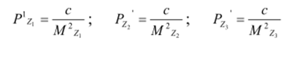
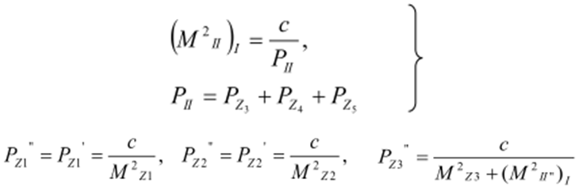

7-амалий иш Мавзу: Полигонометрия тармоғи лойиҳаси аниқлигини баҳолаш
Учлари бошланғич пунктлар ва бошланғич дирекцион бурчакларга таянган полигонометрик йўлни
лойиҳалашда, йўлнинг ўрта қисмидаги пункт ҳолати хатолиги ва дирекцион бурчак хатолигини
аниқлаш талаб этилади.
Тармоқнинг энг заиф қисмида жойлашган пункт ҳолатининг хатолиги
бу ерда М-полигонометрик тармоқ охирги пункти холатининг бошланғичга нисбатан хатолиги
бўлиб, қуйидаги ифода орқали ҳисобланади:
бу ерда ms - томонлар узунликларини ўлчаш ўрта квадратик хатолиги;
mb-бурчак ўлчаш ўрта
квадратик хатолиги; До.i" йўлнинг ҳар
бир учидан полигонометрия схемасининг оғирлик марказигача бўлган
масофалар. Томонлар узунлиги инвар симлар ёрдамида ўлчанган бўлса,
бу ерда чизиқли ўлчашларда систематик ва тасодифий хатоларнинг таъсир этиш
коэфициентлари; [S]- периметр; L- полигонометрия йўли узунлиги.
Тугун нуқталар ҳолатининг хатолиги қуйидаги ифода ёрдамида ҳисобланади:
бу ерда m-юқоридаги катталикнинг алоҳида йўл учун ўрта квадратик хатолиги; n-битта нуқтада
туташувчи нуқталар сони.
Полигонометрия тармоғи аниқлигини баҳолашнинг содда усулларидан биттаси кетма-кет
яқинлашиш
усули ҳисобланади. Бу усулнинг моҳияти қуйидагидан иборат.
Биринчи яқинлашишда ҳар бир тугун нуқтада туташувчи йўллар тизими, мустақил тизим деб
қаралади ва уларнинг ҳолати хатосиз деб қабул
қилинади.
Ҳар бир йўл бўйича тугун нуқта хатолигининг кутилган ўрта квадратик хатолиги
ҳисобланади.
3-расмда келтирилган 1-тугун нуқта учун бу ҳолатлар қуйидагича бўлсин:
Мz1-Z1 йўл бўйича, А нуқтадан келувчи;
Мz2-Z2 йўл бўйича, B нуқтадан келувчи;
Мz3-Z3 йўл бўйича, 2 нуқтадан келувчи. 1-нуқта ҳолатини аниқлаш
вазни қуйидагига тенг:

Биринчи яқинлашишда 1-тугун нуқта ҳолатини аниқлаш ўрта квадратик хатолиги қуйидаги ифода
орқали ҳисобланади.
1-расм. Полигонометрия тармоғи схемаси
2-тугун нуқтани аниқлаш ўрта квадратик хатолиги ҳам шунга ўхшаш
ҳисобланади:

II нуқта учун ҳам шунга ўхшаш кўринишда ёзиш мумкин:
Учинчи яқинлашишда I ва II тугун нуқталарнинг бошланғич хатолиги
сифатида иккинчи яқинлашишда олинган хатолик қабул қилинади.
Ҳисоблаш охирги иккита яқинлашишда тахминан бир хил натижага
эришгунга қадар давом эттирилади.